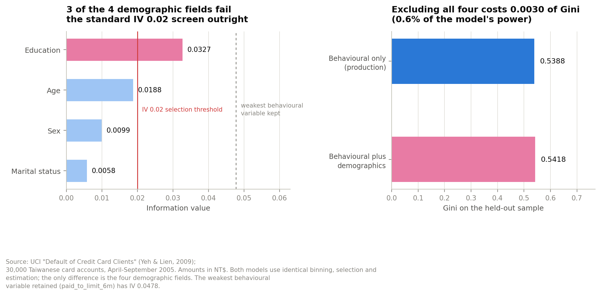
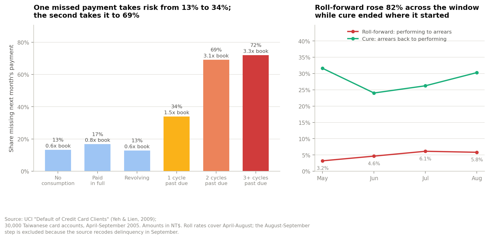
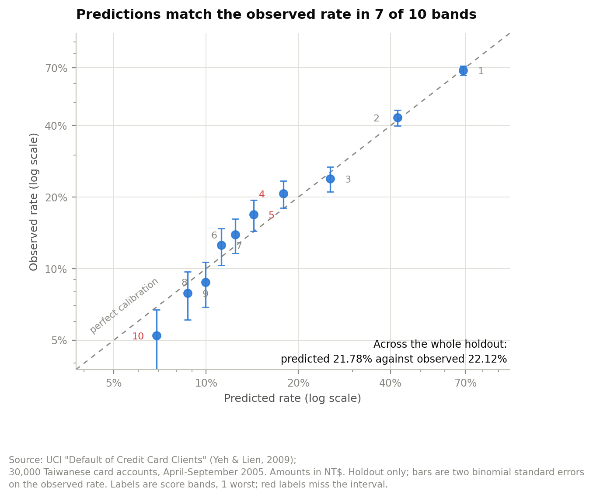
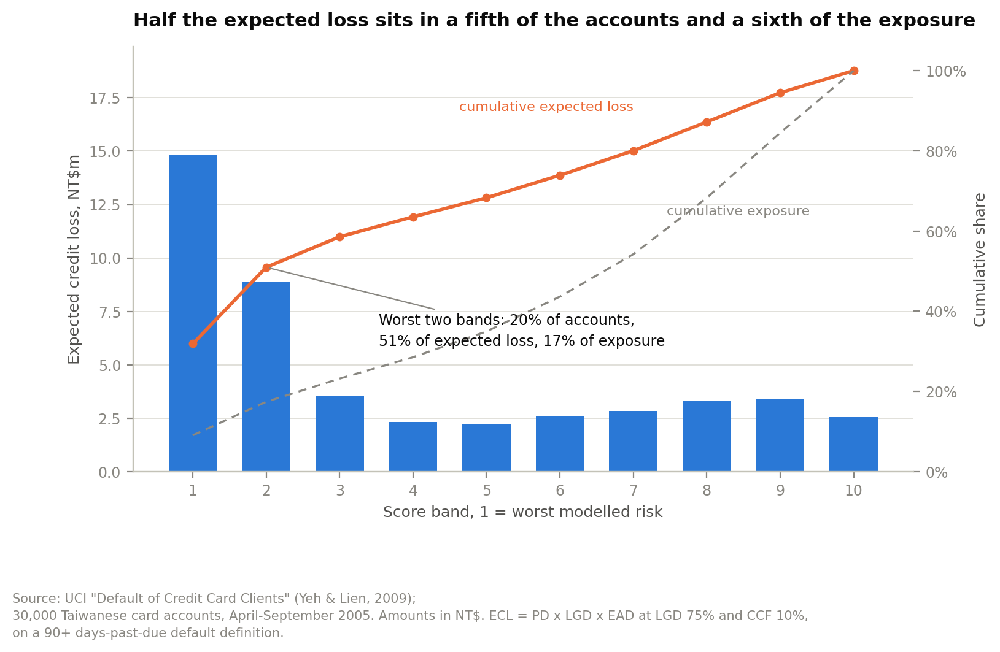

Credit risk · Consumer banking
A 30,000-account credit card book — NT$5.02bn of committed limits against NT$1.54bn drawn — read for where the delinquency is going, what it is worth in expected loss, and which credit lines stop paying for themselves.
Sex, education and marital status are excluded from the scorecard. That is a conduct decision, not a modelling one, and it is usually argued against on the grounds that the bank gives up predictive power.
So I measured it. Fitting the same model with those fields included and comparing on the same holdout: the exclusion costs 0.003 of Gini — 0.5388 against 0.5418. Three of the four demographic fields fail the standard information-value screen outright before they reach the model.
There is no efficiency argument left. A scorecard built on behaviour alone performs indistinguishably from one that uses who the customer is.

Across consecutive months the pooled roll-forward rate — current to one cycle past due — is 4.9%, and it rises from 3.2% in the earliest month observed to 5.8% in the latest. The pooled cure rate is 28.2%.
Default probability escalates sharply with the delinquency bucket an account is sitting in, which is what makes the state variable the strongest single input to the scorecard and the natural basis for the staging in the loss model.

Logistic regression on behavioural variables only: repayment status history, utilisation, payment ratios, limit and bill trajectory. AUC 0.769, Gini 0.539, KS 0.414 on a 9,000-account holdout, against 0.775 in sample.
Discrimination is not the whole test. A scorecard that ranks well but is poorly calibrated cannot be used for provisioning, because the expected loss numbers it produces will be wrong even where the ranking is right. Seven of the score bands sit within two standard errors of their observed default rate, with a largest gap of 2.8 percentage points.

Expected credit loss is PD × LGD × EAD, in an IFRS 9 frame. The concentration is what matters for action: 51% of the expected loss sits in the worst two score bands, which carry 17% of exposure.

Recommendation
The limit-cut decision reduces to a single probability threshold. On the base case, cutting an undrawn line pays for itself above a 1.64% probability of default; on the most adverse revenue assumption tested, above 3.11%. Both thresholds sit far below the default rate in the worst score bands, so the decision is not close for those accounts.
Cut the top three bands. The value-maximising depth is deeper than that, but the marginal bands trade a large increase in customers affected for a small increase in loss avoided, and the customer cost of a limit cut is not in this data.
Loss given default is an assumption, not an observation — the file has no recovery data — so it is stated in configuration and swept rather than argued for. The book is 2005 Taiwanese and six months long: the roll rates are a snapshot of one point in one credit cycle in one jurisdiction, and nothing here should be carried to another market without re-estimation.